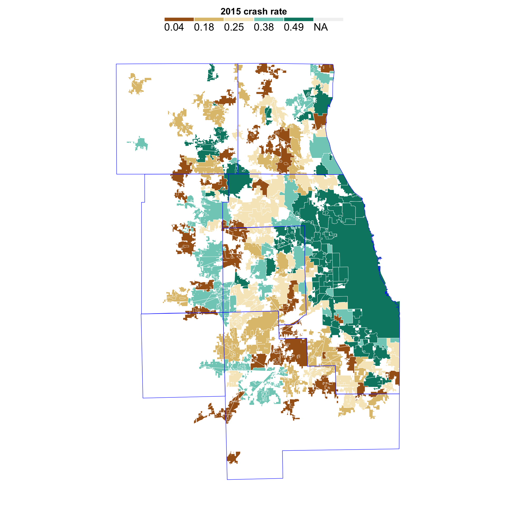
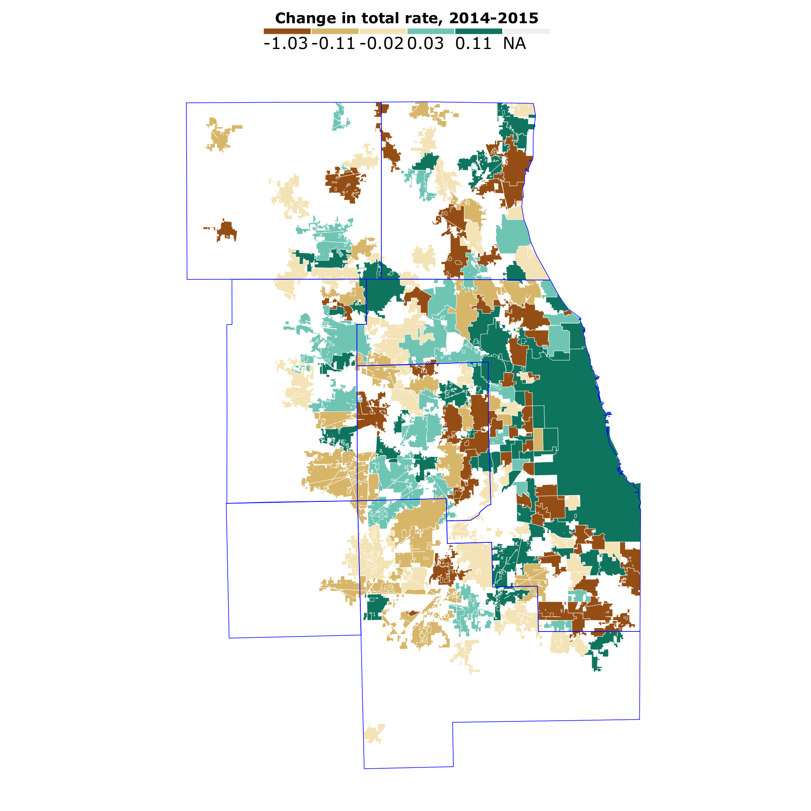
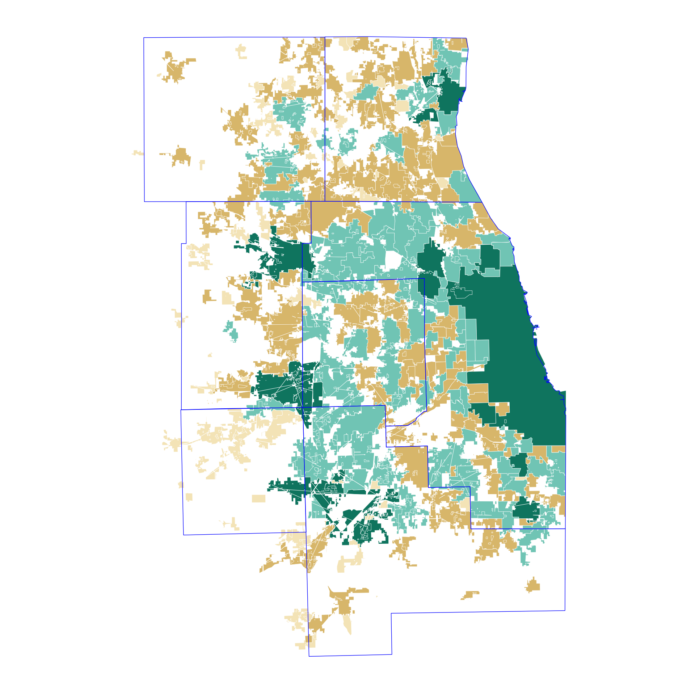

We’re exploring the pedestrian/cycling crash data using maps. First we need to load in a bunch of libraries and the data.
## Loading required package: sp## rgdal: version: 1.2-7, (SVN revision 660)
## Geospatial Data Abstraction Library extensions to R successfully loaded
## Loaded GDAL runtime: GDAL 2.1.2, released 2016/10/24
## Path to GDAL shared files: /Library/Frameworks/R.framework/Versions/3.3/Resources/library/rgdal/gdal
## Loaded PROJ.4 runtime: Rel. 4.9.1, 04 March 2015, [PJ_VERSION: 491]
## Path to PROJ.4 shared files: /Library/Frameworks/R.framework/Versions/3.3/Resources/library/rgdal/proj
## Linking to sp version: 1.2-4##
## Attaching package: 'dplyr'## The following objects are masked from 'package:stats':
##
## filter, lag## The following objects are masked from 'package:base':
##
## intersect, setdiff, setequal, union## Loading required package: viridisLite##
## Attaching package: 'scales'## The following object is masked from 'package:readr':
##
## col_factorWe examined the data geographically in a variety of ways. We mapped total crashes by year and crashes with injuries by year.
We calculated the rate of crashes and the rate of injuries for each municipality by 1,000 population, for each year.
ill_f$total_injrate_2014 <- (ill_f$total_inj_2014/ill_f$pop_2014)*1000
ill_f$total_injrate_2015 <- (ill_f$total_inj_2015/ill_f$pop_2015)*1000
ill_f$totalinjchg_1415 <- ill_f$total_injrate_2015 - ill_f$total_injrate_2014Then we started generating maps.
For instance, here’s the rate per 1000 population for all crashes in 2015, by town. The data is mapped by quintiles, or in five chunks with about the same number of towns in each chunk.
Here’s how that would divide up.
quantile(ill_f$total_rate_2015, probs = seq(0, 1, .2), na.rm=TRUE)## 0% 20% 40% 60% 80% 100%
## 0.04 0.18 0.25 0.38 0.49 4.81This shows the break points in our data for quintiles. Each chunk is about 20% of the data (100/5 = 20). The lowest 20%, from 0 to 20%, is 0.04 to 0.18. The highest 20%, from 80 to 100%, is from 0.49 to 4.81.
Here’s what that looks like on the map.
#----------------------------------
#----------------------------------
# define quantiles for data
no_classes <- 5
labels <- c()
quantiles <- quantile(ill_f$total_rate_2015, # data you wish to work with
probs = seq(0, 1, length.out = no_classes + 1),
na.rm=TRUE)
# custom labels
labels <- c()
for(idx in 1:length(quantiles)){
labels <- c(labels, paste0(round(quantiles[idx], 2)))
}
labels <- labels[1:length(labels)-1]
# add quantile info to dataset
ill_f$total_rate_2015_quantiles <- cut(ill_f$total_rate_2015,
breaks = quantiles,
labels = labels,
include.lowest = T)
# now map
map <- ggplot(ill_f,
aes(long, lat, group = group, fill = total_rate_2015_quantiles)
) +
geom_polygon( color = "white", size = 0.15) + coord_map() + theme_map()
map <- map + labs(
fill = "2015 crash rate"
)
map <- map +
theme(legend.position = "top", legend.direction = "horizontal") +
scale_fill_manual(
values = c("#a6611a", "#dfc27d", "#f6e8c3", "#80cdc1", "#018571"),
guide = guide_legend(
direction = "horizontal",
keyheight = unit(2, units = "mm"),
keywidth = unit(75 / length(labels), units = "mm"),
title.position = 'top',
title.hjust = 0.5,
nrow = 1,
byrow = T,
# Can reverse the legend if that's clearer
reverse = F,
label.position = "bottom")
)
map <- map + geom_polygon(data = co6, aes(x=long, y = lat, group = group),
fill = NA, color = "blue", size = 0.25)
map
We looked how the data changed over time. For instance, here’s the change in the total crash rate per 1000 from 2014 to 2015.
ill_f$chg1415 <- ill_f$total_rate_2015 - ill_f$total_rate_2014
quantile(ill_f$chg1415, probs = seq(0, 1, .2), na.rm=TRUE)## 0% 20% 40% 60% 80% 100%
## -1.03 -0.11 -0.02 0.03 0.11 1.18# define quantiles for data
no_classes <- 5
labels <- c()
quantiles <- quantile(ill_f$chg1415, # data you wish to work with
probs = seq(0, 1, length.out = no_classes + 1),
na.rm=TRUE)
# custom labels
labels <- c()
for(idx in 1:length(quantiles)){
labels <- c(labels, paste0(round(quantiles[idx], 2)))
}
labels <- labels[1:length(labels)-1]
# add quantile info to dataset
ill_f$chg1415_quantiles <- cut(ill_f$chg1415,
breaks = quantiles,
labels = labels,
include.lowest = T)
# now map
map <- ggplot(ill_f,
aes(long, lat, group = group, fill = chg1415_quantiles)
) +
geom_polygon( color = "white", size = 0.15) + coord_map() + theme_map()
map <- map + labs(
fill = "Change in total rate, 2014-2015"
)
map <- map +
theme(legend.position = "top", legend.direction = "horizontal") +
scale_fill_manual(
values = c("#a6611a", "#dfc27d", "#f6e8c3", "#80cdc1", "#018571"),
guide = guide_legend(
direction = "horizontal",
keyheight = unit(2, units = "mm"),
keywidth = unit(75 / length(labels), units = "mm"),
title.position = 'top',
title.hjust = 0.5,
#label.hjust = 1,
nrow = 1,
byrow = T,
# Can reverse the legend if that's clearer
reverse = F,
label.position = "bottom")
)
map <- map + geom_polygon(data = co6, aes(x=long, y = lat, group = group),
fill = NA, color = "blue", size = 0.25)
map
In the end, we found the most compelling and useful map was one showing how pervasive the problem is.
We mapped towns with five or more total crashes with fatalities over the four years (dark green), towns with at least one and fewer than five crashes with fatalities (light green) and then towns with only crashes with injuries (brown).
towns_f <- read.csv("data/towns_f.csv")
fatals <- towns_f[towns_f$total_fatal > 0,]
fatals5 <- towns_f[towns_f$total_fatal >= 5,]
injured <- towns_f[towns_f$total_inj > 0,]
map <- ggplot() +
geom_polygon(data = towns_f, aes(long, lat, group = group),
fill = "#f6e8c3", color = "white", size = 0.15) + coord_map() + theme_map()
map <- map + geom_polygon(data = injured, aes(long, lat, group = group),
fill = "#dfc27d", color = "white", size = 0.15) + coord_map()
map <- map + geom_polygon(data = fatals, aes(long, lat, group = group),
fill = "#80cdc1", color = "white", size = 0.15) + coord_map()
map <- map + geom_polygon(data = fatals5, aes(long, lat, group = group),
fill = "#018571", color = "white", size = 0.15) + coord_map()
map <- map + theme(legend.position="None")
map <- map + geom_polygon(data = co6, aes(x=long, y = lat, group = group),
fill = NA, color = "blue", size = 0.25)
map
Finally, we exported out the data to use as the basis of a web app, and to import into QGis to create the geojson that would power an interactive map.